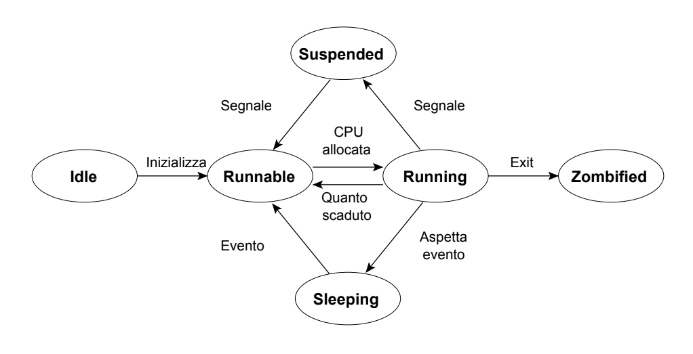

Processi in C
Requisiti per questa sezione
Molti degli strumenti che vengono usati in questo capitolo richiedono l'uso di un sistema operativo di tipo Unix-Like.E' consigliabile quindi creare una macchina virtuale con os Unix-like oppure se usate Windows, una wsl.
Prima di mostrare il codice, dobbiamo guardare alcuni aspetti fondamentali per gestire al meglio un processo.
I processi non sono altro che istanze di un programma, ovvero, ogni volta che eseguiamo un programma creiamo un processo.
Come funziona?
Principalmente, il mezzo che ci consente di creare un processo è il kernel del sistema operativo che stiamo usando.
Al suo interno viene descritta una tabella chiamata "tabella dei processi", che contiene tutti i processi aperti.
È importante sapere che questa tabella ha un numero predefinito di slot e quindi, esiste un limite massimo di processi attivi contemporaneamente.
All'avvio del nostro PC, il kernel, essendo anch'esso un processo, si inserisce all'interno della tabella (in posizione 0) e crea in automatico un processo figlio chiamato init (che si trova solitamente in posizione 1) e che costituisce il processo "padre" del sistema, perché tutti i processi che verranno creati in seguito saranno generati da lui.
Ogni volta che un processo viene creato, gli vengono assegnate delle caratteristiche, come:
- Process-ID (PID): identificativo unico del processo
- Process-ID del processo padre (PPID): identificativo unico del processo padre
- User-ID reale (real UID)
- User-ID effettivo
- Process Group ID (PGID)
- User Group ID reale
- User Group ID effettivo
Grazie al PID, si riesce a determinare la locazione in cui è contenuto il processo all'interno della tabella dei processi. Insieme a questi identificatori, gli vengono assegnate anche quattro sezioni logiche, che sono:
- codice, in cui è contenuto il codice del processo
- dati, in cui sono contenuti i dati statici
- heap, in cui sono contenuti i dati allocati dinamicamente
- stack, in cui sono contenuti i dati locali alle chiamate di funzioni
Tutti i processi possono trovarsi in vari stati:
- idle: stato iniziale, tipico di un processo appena creato tramite una fork() (lo vedremo tra poco)
- runnable: pronto per l'esecuzione e in attesa che la CPU sia disponibile
- running: in esecuzione (sta occupando la CPU)
- sleeping: in attesa di un evento per riattivarsi, ad esempio se un processo esegue una read(), si addormenta fino a quando la richiesta di I/O non viene completata
- suspended: il processo è stato “congelato” (frozen) da un segnale, come ad esempio SIGSTOP; il processo è “scongelato” solo quando riceve il segnale SIGCONT;
- zombified: risorse rilasciate ma ancora presente nella Tabella dei Processi;

Come affermato precedentemente, la creazione di un processo avviene attraverso un meccanismo di duplicazione.
Questo meccanismo avviene grazie a una chiamata di sistema chiamata fork(). In sostanza, una volta che il processo
chiama questa funzione, essa esegue la duplicazione del processo chiamante, quindi letteralmente lo duplica. Il processo che ha invocato la fork()
viene chiamato processo padre, mentre il processo duplicato viene detto figlio. A parte il PID e il PPID, i due processi sono completamente uguali e inoltre, il figlio
continua a eseguire il codice ereditato dal padre dal punto in cui è avvenuta la chiamata fork().
Conoscere il PID e PPID di un processo da programma
Per conoscere il PID del processo che stiamo eseguendo e anche quello del padre, possiamo usare le funzioni getpid() e getppid() (descritte all'interno dell'header unistd.h).
Ecco un esempio di programma:
#include <unistd.h>
int main() {
printf("pid di questo processo: %i\npid processo padre: %i\n", getpid(), getppid());
return 0;
}
Output programma
pid processo padre: 331
Duplicazione di un processo
Abbiamo già visto che un nuovo processo viene creato attraverso un meccanismo di “duplicazione” realizzato dalla chiamata di sistema fork().Questa chiamata viene descritta all'interno della libreria unistd e restituisce un valore intero diverso per il processo padre e per il processo figlio.
Quindi, il processo padre avrà come valore restituito un numero intero positivo sempre diverso dal figlio.
#include <unistd.h>
int main() {
printf("Valore resituito dalla fork per il processo %i: %i\n", getpid(), fork());
return 0;
}
Output programma
Valore resituito dalla fork per il processo 1244: 0
Manipolazione dei processi
Abbiamo appena visto che la funzione fork() restituisce al processo figlio sempre il valore 0.Di conseguenza, è possibile manipolare il flusso del programma sia per il processo padre che per il processo figlio usando delle semplici strutture di controllo.
#include <unistd.h>
int main() {
int pid = fork();
if(pid){
printf("pid processo padre: %i\n", getpid());
}else{
printf("pid processo figlio: %i\n", getpid());
}
printf("fine programma\n");
return 0;
}
Output programma
fine programma
pid processo figlio: 54660
fine programma
Come avrete notato, sia il processo padre che il processo figlio eseguono lo stesso flusso di istruzioni dopo aver terminato le operazioni all'interno del costrutto selettivo.
Ma se volessimo interrompere il processo figlio alla fine dell'else? Per fare questo, possiamo inserire all'interno dell'else la funzione exit().
Questa funzione, passando come parametro lo stato di uscita del processo, dealloca il suo codice, dati, heap e stack, per poi terminarlo definitivamente.
Oltre a chiuderlo, exit() manda al processo padre il segnale SIGCHLD e attende che il codice di stato di uscita venga accettato.
Nel caso in cui il processo padre termini prima del processo figlio, il kernel si assicura che il figlio venga "adottato" dal processo init, provvedendo a settare il nuovo PPID (Process Parent ID) con quello di init.
#include <unistd.h>
int main() {
int pid = fork();
if(pid){
printf("pid processo padre: %i\n", getpid());
}else{
printf("pid processo figlio: %i\n", getpid());
exit(0);
}
printf("funzione eseguita solo dal processo padre\n");
return 0;
}
Output programma
funzione eseguita solo dal processo padre
pid processo figlio: 1041
Come possiamo vedere, il padre non attende la terminazione del figlio. Abbiamo creato involontariamente un processo zombie, ovvero un processo che rimane allocato sempre
all'interno della tabella dei processi ma che non occupa alcuna risorsa. Questo perchè il padre non esegue la chiamata di sistema wait() che è la responsabile per la ricezione del segnale SIGCHLD.
Questo processo non avviene mai se il processo figlio viene adottato, in quanto il processo init accetta automaticamente i segnali.
#include <unistd.h>
#include <sys/wait.h>
int main() {
int pid = fork();
if(pid){
printf("pid processo padre: %i\n", getpid());
wait(NULL); // Il padre attende la terminazione del figlio per evitare la creazione del processo zombie
}else{
printf("pid processo figlio: %i\n", getpid());
exit(0);
}
printf("funzione eseguita solo dal processo padre\n");
return 0;
}
wait() sospende un processo fino alla terminazione di uno qualunque dei suoi processi figli.
In particolare, la chiamata attende la terminazione di un processo figlio e ne ritorna il PID, mentre
nel parametro di uscita viene inserito il motivo della terminazione e lo stato di uscita del processo che termina.
Se al momento della chiamata esiste un processo figlio zombie, la chiamata serve immediatamente il corrispondente segnale e termina.
Il prametro può essere valutato tramite delle semplici macro:
- WIFEXITED(status): viene valutata ad un valore diverso da 0 se il figlio è terminato normalmente
-
WEXITSTATUS(status): restituisce il codice di ritorno codificato negli 8 bit meno significativi di status.
Può essere utilizzata solo se WIFEXITED(status) ha restituito un valore diverso da 0.
#include <unistd.h>
#include <sys/types.h>
#include <sys/wait.h>
int main(){
int
pid,
pidw,
status;
if(pid = fork()){
// siamo nel padre
printf("Processo padre(pid=%d): ho generato figlio (pid=%d)\n", getpid(), pid);
pidw = wait(&status); // aspetto che venga terminato il figlio
if(WIFEXITED(status))
printf("Processo padre(pid=%d): processo %d terminato con exit(%d)\n", getpid(), pidw, WEXITSTATUS(status));
else
printf("Processo padre(pid=%d): processo %d terminato con segnale\n", getpid(), pidw);
}else{
// siamo nel figlio
printf("Processo figlio(pid=%d): sono generato dal processo (pid=%d)\n", getpid(), getppid());
sleep(1);
}
// il padre e figlio restituiscono 0
return 0;
}
Output del programma
Processo figlio(pid=22430): sono generato dal processo (pid=22429)
Processo padre(pid=22429): processo 22430 terminato con exit(0)